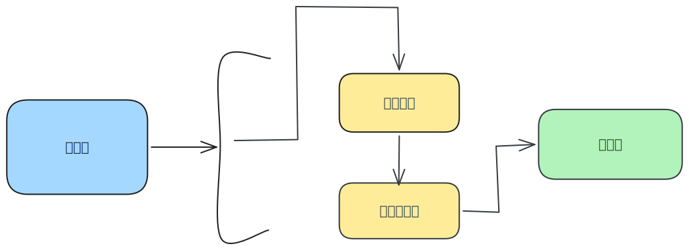

ES6之后引入了Promise对象,让JS引擎也可以发起异步任务
| 任务(代码) | 执行所在环境 |
|---|---|
| JS脚本执行事件(script) | 浏览器 |
| setTimeout/setInterval | 浏览器 |
| AJAX请求完成事件 | 浏览器 |
| 用户交互事件等 | 浏览器 |
| Promise对象.then() | JS引擎 |
Promise对象.then()是微任务
Promise本身是同步的,而then和catch回调函数是异步的
1.什么是宏任务？
浏览器执行的异步代码
例如:JS执行脚本事件,setTimeout/setinterval,AJAX请求完成事件,用户交互事件等
2.什么是微任务?
JS引擎执行的异步代码
例如:Promise对象.then()的回调
3.JavaScript内代码如何执行
执行第一个script脚本事件宏任务,里面同步代码
遇到宏任务/微任务交给宿主环境,有结果回调函数进入对应队列
当执行栈空闲时,清空微任务队列,再执行下一个宏任务,从1再来
